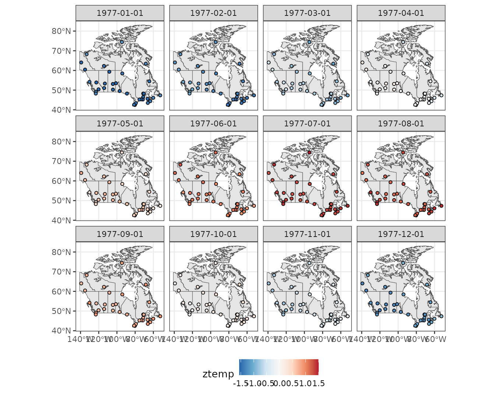
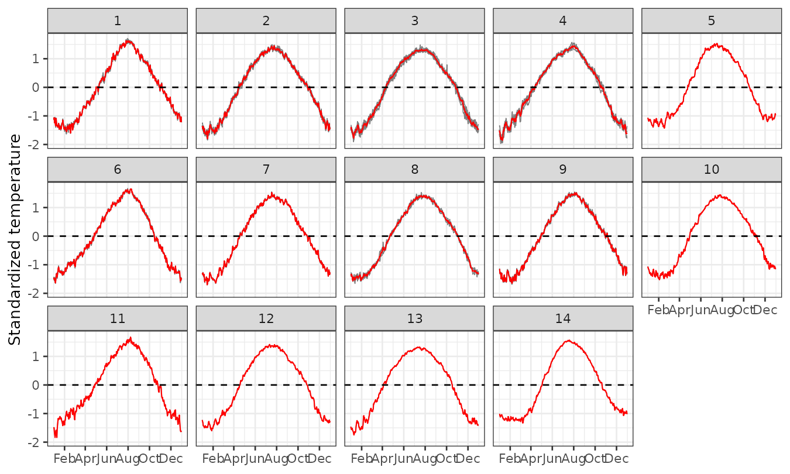

Daily temperature at Canada stations
vg14-temp-canada.RmdIn this vignette, we use sfclust to clusterize Canada
stations with similar standardised temperature averaged over 1960 to
1994.
Load packages and data
#> Loading required package: abind#> Loading required package: sf#> Linking to GEOS 3.12.1, GDAL 3.8.4, PROJ 9.4.0; sf_use_s2() is TRUE#>
#> Attaching package: 'dplyr'#> The following objects are masked from 'package:stats':
#>
#> filter, lag#> The following objects are masked from 'package:base':
#>
#> intersect, setdiff, setequal, unionWe will use the polygonal shapes of the Canada states using the
rnaturalearth package, and the common dataset
CanadianWeather for functional data analysis from the
fda package. Notice that this is a list containing the
daily data per stations, and other information such as the location of
the stations (coordinates).
#> [1] "dailyAv" "place" "province" "coordinates"
#> [5] "region" "monthlyTemp" "monthlyPrecip" "geogindex"Prepare data
Create stars data
Firt, we will convert the stations to the class sf, and
visualize their locations.
stations <- as.data.frame(CanadianWeather$coordinates) |>
mutate(longitud = - `W.longitude`) |>
rename(latitud = "N.latitude") |>
select(longitud, latitud) |>
st_as_sf(coords = c("longitud", "latitud"), crs = st_crs(4326))
ggplot() +
geom_sf(data = canada) +
geom_sf(data = stations, size = 2) +
theme_bw()We standardised the temperature per station to be able to clusterize
based on the functional form rather than the absolute value. Then, we
convert the data to a stars object with dimensions geometry
and time as expected by sfclust.
time <- seq(as.Date("1977-01-01"), as.Date("1977-12-31"), by = "1 day")
canweather <- st_as_stars(
temp = t(CanadianWeather$dailyAv[, , 1]),
ztemp = t(scale(CanadianWeather$dailyAv[, , 1])),
dimensions = st_dimensions(geometry = st_geometry(stations), time = time, point = TRUE)
)
canweather#> stars object with 2 dimensions and 2 attributes
#> attribute(s):
#> Min. 1st Qu. Median Mean 3rd Qu. Max.
#> temp -34.800000 -6.7000000 4.10000000 1.877659e+00 12.600000 22.800000
#> ztemp -1.967879 -0.9821809 0.09676872 -2.067071e-19 0.960108 1.711485
#> dimension(s):
#> from to offset delta refsys point
#> geometry 1 35 NA NA WGS 84 TRUE
#> time 1 365 1977-01-01 1 days Date TRUE
#> values
#> geometry POINT (-52.43 47.34),...,POINT (-94.54 74.41)
#> time NULLExploratory analysis
Let’s visualize the temperature averaged per month. We can observe that higher values of standardised temperature have been observed in the north station on July; while the lowest values have been observed on January around some stations located around the south areas closed to the center.
monthdata <- aggregate(canweather, by = "month", FUN = mean)
ggplot() +
geom_sf(data = canada) +
geom_stars(aes(fill = ztemp), monthdata, shape = 21, size = 1.3) +
facet_wrap(~ time) +
scale_fill_distiller(palette = "RdBu") +
theme_bw() +
theme(legend.position = "bottom")
Additionally we can observe the temperal trends per regions. Although the functional shapes seem similar, it is important to notice that the temperature increases and decays at different times of the year per station.
canweather |>
st_set_dimensions("geometry", values = 1:nrow(canweather)) |>
as_tibble() |>
ggplot() +
geom_line(aes(time, ztemp, group = geometry, color = factor(geometry)), linewidth = 0.3) +
theme_bw() +
theme(legend.position = "none")
Spatial clustering
Create graph
sfclust assumes that the geometry type of
the provided stars object if POLYGON, from
which it create a igraph using the adjacency matrix.
However, the processed canweather has POINT as
a geometry representing the locations of stations. In this case, it is
necessary to define a graph that captures the connectiviy to consider
between stations. For this, we will create a Voronoi tessellation with
will create a polygon for each station.
stations2 <- st_transform(stations, st_crs(3857))
# create boundary
boundary <- st_convex_hull(st_union(stations2)) |>
st_buffer(units::set_units(1000, "km"))
# create polygons with voronoi
domain <- st_cast(st_voronoi(st_union(stations2), boundary)) |>
st_intersection(boundary)
# reorganize the polygons to match stations
domain <- domain[as.numeric(st_within(stations2, domain))] |>
st_transform(st_crs(stations))
ggplot() +
geom_sf(data = domain, color = 2, fill = NA) +
geom_sf(data = stations)Model fitting
In this application, because of the trends observed before, we will
assume that the mean standardised temperature can be explained by (i) a
polynomial trend with respect to time, (ii) and an
autoregressive process over times units idt to capture
correlated temporal variation. Additionally, we will start assuming that
each state is a cluster, such us we will start with 35 clusters using
the created polygonal data (domain). Because of the
presence of strong noise on the curves, we will use a strong penalty
(-300) for the increase of parameters, it means that to have high
chances of accepting the creation a new cluster, then the log marginal
likelihood has be to improve by a value of 300, if the proposal has an
improvement on the marginal likelihood smaller than 300, it will
probably be rejected.
formula <- ztemp ~ poly(time, 2) + f(idt, model = "rw1")
geodata <- genclust(domain, nclust = 35)
set.seed(123)
result <- sfclust(canweather, graphdata = geodata, formula = formula,
logpen = -300, niter = 4000, burnin = 0, thin = 10, nmessage = 10, nsave = 100,
control.inla = list(control.vb = list(enable = FALSE)),
path_save = file.path("canweather-mcmc.rds"))
result#> Within-cluster formula:
#> ztemp ~ poly(time, 2) + f(idt, model = "rw1")
#>
#> Clustering hyperparameters:
#> log(1-q) birth death change hyper
#> -300.000 0.425 0.425 0.100 0.050
#>
#> Clustering movement counts:
#> births deaths changes hypers
#> 8 29 19 171
#>
#> Log marginal likelihood (sample 400 out of 400): 17541.96Notice that 8 times there was an increase of number of clusters, 29 times clusters were merged, 19 times the composition were modified, and 171 times the minimum spanning tree has been modified. Also after thinning we keep 400 samples from a total of 4000, and the marginal likelihood achieve a value of 17541.96.
Results
summary(result, sort = TRUE)#> Summary for clustering sample 400 out of 400
#>
#> Within-cluster formula:
#> ztemp ~ poly(time, 2) + f(idt, model = "rw1")
#>
#> Counts per cluster:
#> 1 2 3 4 5 6 7 8 9 10 11 12 13 14
#> 7 7 4 3 2 2 2 2 1 1 1 1 1 1
#>
#> Log marginal likelihood: 17541.96The summary indicates that 8 clusters from 14 have more
than one member, where the two biggest cluster includes 7 stations, the
third 4, and so on.
Let’s create a map with the clustered stations.
sfclust:::plot_clusters(result, sort = TRUE, legend = TRUE, geom_before = geom_sf(data = canada), size = 3,
clusters = 1:8)
We can observe that the biggest cluster is located on the southeast of Canada with the total of 7 close stations, while the second biggest is located on the south conformed by 7 stations that are more further apart. The third one, with 4 stations, is located on the southwest also more further apart.
Empirical temperature per cluster
We can use that information of the cluster assignment to visualize the empirical data per cluster.
sfclust:::plot_series(result, "ztemp") +
labs(y = "Standardised temperature")
Panels 1-8, shows the empirical risk per cluster for those who have more than 1 stations. The main differences between these clusters if the initial shape, the speed of increase, the peak shape and time, the decay behaviour. For example clusters 1 and 2 has a bell shape, while others like 3-6 have almost a linear increase until reaching a maximum level. Panels 9-14 shows the empirical risk per cluster for those who have only 1 station. Notice that these clusters have more particular shapes that differentiate from the previous clusters, and between them.